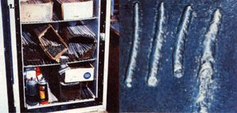

1. A non-functional refrigerator fitted with a 150-watt bulb makes a low -humidity electrode storage bin. 2. These beads demonstrate, from left to right, the results of too-cold through too-hot fusion. The first example indicates low amperage; the last suggests excessive amperage and voltage. The third and best weld penetrated well and puddled rather than stacked up.